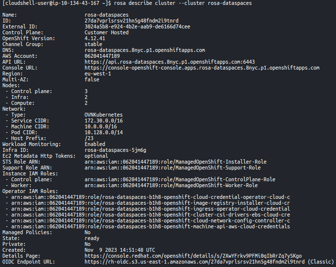
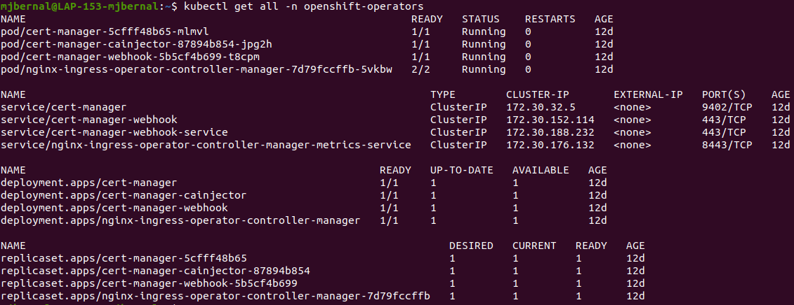
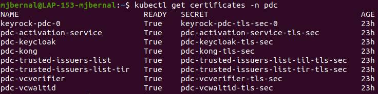

Here are the steps for preparing an AWS account to deploy a Red Hat OpenShift Service (ROSA) cluster.
Required AWS Service Fees
The following table describes the AWS quotas and service levels required to create and run a Red Hat OpenShift Service (ROSA) cluster.
Large quota requests are sent to Amazon Support for review and may take some time to be approved.
Service code
Quota name
Quota code
AWS default
Minimum required
Description
ec2
Running On-Demand Standard (A, C, D, H, I, M, R, T, Z) instances
L-1216C47A
5
100
Maximum number of vCPUs assigned to the Running On-Demand Standard (A, C, D, H, I, M, R, T, Z) instances.
The default value of 5 vCPUs is not sufficient to create ROSA clusters. ROSA has a minimum requirement of 100 vCPUs for cluster creation.
ebs
Storage for General Purpose SSD (gp2) volume storage in TiB
L-D18FCD1D
50
300
The maximum aggregated amount of storage, in TiB, that can be provisioned across General Purpose SSD (gp2) volumes in this Region.
ebs
Storage for General Purpose SSD (gp3) volume storage in TiB
L-7A658B76
50
300
The maximum aggregated amount of storage, in TiB, that can be provisioned across General Purpose SSD (gp3) volumes in this Region.
300 TiB of storage is the required minimum for optimal performance.
ebs
Storage for Provisioned IOPS SSD (io1) volumes in TiB
L-FD252861
50
300
The maximum aggregated amount of storage, in TiB, that can be provisioned across Provisioned IOPS SSD (io1) volumes in this Region.
300 TiB of storage is the required minimum for optimal performance.
Creating an IAM user
Creating an IAM (Identity and Access Management) user in AWS is necessary to securely manage access and permissions associated with AWS resources that will be used by the OpenShift cluster.
We will create this user from the AWS portal IAM service (IAM > Users > Create User). We will then specify a user name and select the option "Provide user access to the AWS Management Console" and "I want to create an IAM user" as shown in the following image:
After clicking on "Next", we will have to configure the user's permissions. We must select the option "Attach policies directly" and select the AdministratorAccess permissions policy.
After creating the user, we will be shown the login details. We will be able to log in as an IAM user via the URL provided.
AWS CloudShell: Installing the CLI
Once logged in with the new IAM user, the CloudShell console can be accessed from the top panel of the AWS portal.https://062041447189.signin.aws.amazon.com/console.
Download ROSA CLI, unzip it and add it to the PATH:
After the installation is complete, obtain the cluster information:
rosalistclusters
rosadescribecluster--cluster<name>

Create the cluster admin user:
rosacreateadmin--cluster=<name>
The user will not be available immediately, we will have to wait several minutes (about 5 minutes) before proceeding with the login to the Openshift cluster.
Hosted zones on Amazon Route 53 are log containers that contain information about how you want to route traffic for a given domain and its corresponding subdomains.
We are going to create a Hosted Zone in Route53 to route the traffic of the subdomains where we are going to host the applications of the Openshift cluster, which are the different components of the Data Space Connector.
To do this, we need to have in our possession a given domain. In our case, the domain used is ds.smartcity-marketplace.com.
Through the AWS services panel, we will be able to go to AWS Route53. There we can create a hosted zone by clicking on Hosted Zones > Create a hosted zone. We will have to set our domain as the zone name and select "Public hosted zone". After creating it, we will be able to access the created zone and consult the assigned nameservers. We will have to set these name servers as the Custom DNS of our domain at the provider where we purchased it.
Domains, Routes and Certificates
The deployment of the FIWARE Data Space Connector assumes that you have an Openshift cluster that is able to manage domains, SSL certificates and configure routes. To achieve this, we need to install the following operators in our cluster:
External-DNS, which facilitates the automatic allocation and update of DNS records for services exposed in the cluster. When a service is created in Openshift, External-DNS detects these services and automatically creates or updates external DNS records (in our case, the hosted zone created in Route53) to point to the IP addresses of those services.
Cert-Manager, which automates the issuance, renewal and management of SSL certificates in the cluster. Cert-Manager can integrate with services such as Let's Encrypt to automatically provide SSL certificates to applications that need them.
Cert-Utils, which is an OpenShift-specific operator and is used to automatically inject certificates into Route objects. In OpenShift, routes are objects that define how an application is exposed to external traffic. Cert-Utils is used to automate the injection of SSL certificates into these route objects.
The process to follow to install these components is explained in the FIWARE repository: ROUTES.md.
Using External-DNS
After installing, we can check that the operator has been deployed correctly by executing:
kubectlgetall-nexternal-dns-operator
If everything is OK, we can move on to the creation of the External DNS resource that will be responsible for creating entries in our Route53 Hosted Zone.
First we create a Kubernetes secret with the access key and the AWS secret. If we do not have this access key + secret, we can create them from the AWS IAM Portal. It is important to verify that the user associated with the access key has permissions for CRUD in Route53 (users with AdministratorAccess have these permissions).
Next, we are going to create a resource of type ExternalDNS and associate it to our Route 53 DNS Zone. The idea is that, every time a service (with assigned host) is created in the cluster, the External DNS will automatically create the entry in our DNS Zone.
The value Z08275492EDOR2ZSK994S is the ID of the Route53 hosted zone, which in our case is the zone of the domain ds.smartcity-marketplace.com.
Using Cert Manager
After the installation, we can check that the operator has been deployed correctly by running by executing:
kubectlgetall-nopenshift-operators

Now we are going to create a Kubernetes secret with the access key and the AWS secret, in the same way as we did in the previous section. This is necessary because the secrets are created at namespace level, if we want to have a secret in several namespaces, we will have to create it in each of them independently.
We can now move on to create a new Kubernete resource called Cluster Issuer. This resource represents Certificate Authorities (CA) that can generate signed certificates in response to requests. response to requests. In our case, we are going to create two different Cluster Issuers, one that will use Let's Encrypt as CA and another that will generate self-signed certificates. The first one is the one that we are interested in using when we do the final deployment of the connector, since it provides us with reliable certificates. provides us with trusted certificates. The second one will be used to test the deployment of the connector. connector.
This is because during the deployment of the connector it is very likely that we will encounter errors that we will have to debug, so we will perform the deployment several times until all the components work correctly. Let's Encrypt has a policy of not generating more than 5 certificates for the same domain in a given period of time. It is crucial to take this limitation into account during the deployment process, since exceeding this limit could lead to restrictions in the issuance of certificates for our domain.
Therefore, it is advisable to use self-signed certificates until all the connector components are working properly.
ClusterIssuer to generate TLS certificates through Let's Encrypt:
Once we have created the Cluster Issuers, let's check if they are able to request and store the certificates. store the certificates. To do this we create Certificate type resources.
We can check the status of the certificates by executing the following command:
kubectlgetcertificates
If the value TRUE appears in the READY column, it means that the certificates have been successfully obtained and stored in the indicated secrets. We can also check the secrets by executing the following command:
These secrets contain the following values:
- tls.key: private key of the certificate
- tls.crt: certificate
- ca.crt: the CA that validates the certificate.
In the case of self-signed certificates, it only contains the first two.
Routes and Certificates in FIWARE DS Connector
It is necessary to have all these Openshift components working properly in our cluster, because during the installation of the FIWARE Data Space Connector with Helm the services are exposed using these resources. The services that are exposed through a subdomain are: keyrock, activation-service, keycloak, kong, trusted-issuers-list-til, trusted-issuers-list-tir, vcverifier, vcwaltid and vcwaltid-cert.
To expose each of these services, a number of objects are automatically created:
Route objects: This resource is used to expose services across the network and allow external access to connector applications.
Certificate objects: this resource is used for the management (obtaining, maintenance...) of TLS/SSL certificates for the connector's applications.

Secret objects (TLS secret): these secrets contain the tls.crt and tls.key values associated with each path to services in the cluster. If these secrets are not being created correctly, the connector deployment fails. connector deployment fails.
Deployment with Helm
Helm is a package manager for Kubernetes, which simplifies and automates the deployment and management of applications. A "Helm chart" is a pre-configured Kubernetes resource bundle, designed to be easily shared, versioned and installed using Helm.
The FIWARE Data Space Connector is distributed as an Umbrella-Chart that contains all of the sub-charts (one for each component of the connector) and the necessary dependencies for deployment. deployment.
Download connector with Helm Chart
We can download the connector via the chart repository:
# add the repohelmrepoadddschttps://fiware-ops.github.io/data-space-connector/
# Check repohelmrepolist
Then, the chart will be ready to be used.
We can also download the source code (releases) directly:
# set version you are interested inversion=0.9.0
wget
https://github.com/FIWARE-Ops/data-space-connector/releases/download/data-sp
ace-connector-$version/data-space-connector-$version.tgz&&tar-xzvf
data-space-connector-$version.tgz
Configuration using values.yaml
As we have seen, a Helm Chart is a package that contains all the necessary resources to deploy an application in Kubernetes, in our case, to launch each of the components of the connector.
In the source code we can see that each of the components is presented as a sub-chart, which in turn has its own templates, dependencies, sub-charts and configuration files. configuration files.
To finish defining everything necessary for the deployment of the connector, we will have to create a global configuration file (values.yaml) in which, for each of the components, we define the necessary parameters so that the connector can be deployed in our environment. The values that we define in this global configuration file, somehow complete or overwrite the configuration parameters that come by default in the helm chart. Let's start from the configuration file provided by FIWARE: values.yaml.
For example, the configuration for the VCWaltid component would be as follows:
# Nombre del componente a configurarvcwaltid:
# Permitir el despliegue del compoente vcwaltiddeploymentEnabled:true# Definir el Decentralized ID de la organizacióndid:did:web:pdc-demo.ds.smartcity-marketplace.com:did
# Definir la ruta al host de la aplicación vcwaltidroute:
enabled:true# Subdominio que alojará la aplcaciónhost:pdc-demo.ds.smartcity-marketplace.com
# Configuración TLStls:
insecureEdgeTerminationPolicy:Redirect
termination:edge
# Indicamos quien maneja los certificados# En nuestro caso el Cluster Issuer que hemos creado en pasos anteriorescertificate:
issuer:
kind:ClusterIssuer
name:letsencrypt-prod
# Walt-id configuración internavcwaltid:
# Persistencepersistence:
enabled:truepvc:
size:1Gi
# Lista de plantillas a creartemplates:
GaiaXParticipantCredential.json:|{"@context":["https://www.w3.org/2018/credentials/v1",
"https://registry.lab.dsba.eu/development/api/trusted-shape-registry/v1/shapes/jsonld/trustframework#"],
"type":["VerifiableCredential"],
"id":"did:web:raw.githubusercontent.com:egavard:payload-sign:master",
"issuer":
"did:web:raw.githubusercontent.com:egavard:payload-sign:master",
"issuanceDate":"2023-03-21T12:00:00.148Z",
"credentialSubject":{"id":"did:web:raw.githubusercontent.com:egavard:payload-sign:master",
"type":"gx:LegalParticipant",
"gx:legalName":"dsba compliant participant",
"gx:legalRegistrationNumber":{"gx:vatID":"MYVATID"},
"gx:headquarterAddress":{"gx:countrySubdivisionCode":"BE-BRU"},
"gx:legalAddress":{"gx:countrySubdivisionCode":"BE-BRU"},
"gx-terms-and-conditions:gaiaxTermsAndConditions":
"70c1d713215f95191a11d38fe2341faed27d19e083917bc8732ca4fea4976700"}}NaturalPersonCredential.json:|{"@context":["https://www.w3.org/2018/credentials/v1"],
"credentialSchema":{"id":
"https://raw.githubusercontent.com/FIWARE-Ops/tech-x-challenge/main/schema.json",
"type":"FullJsonSchemaValidator2021"},
"credentialSubject":{"type":"gx:NaturalParticipant",
"familyName":"Happy",
"firstName":"User",
"roles":[{"names":["LEGAL_REPRESENTATIVE"],
"target":"did:web:onboarding"}]},
"id":"urn:uuid:3add94f4-28ec-42a1-8704-4e4aa51006b4",
"issued":"2021-08-31T00:00:00Z",
"issuer":"did:ebsi:2A9BZ9SUe6BatacSpvs1V5CdjHvLpQ7bEsi2Jb6LdHKnQxaN",
"validFrom":"2021-08-31T00:00:00Z",
"issuanceDate":"2021-08-31T00:00:00Z",
"type":["VerifiableCredential","LegalPersonCredential"]}MarketplaceUserCredential.json:|{"@context":["https://www.w3.org/2018/credentials/v1"],
"credentialSchema":{"id":
"https://raw.githubusercontent.com/FIWARE-Ops/tech-x-challenge/main/schema.json",
"type":"FullJsonSchemaValidator2021"},
"credentialSubject":{"type":"gx:NaturalParticipant",
"email":"normal-user@fiware.org",
"familyName":"IPS",
"firstName":"employee",
"lastName":"IPS",
"roles":[{"names":["LEGAL_REPRESENTATIVE"],
"target":"did:web:onboarding"}]},
"id":"urn:uuid:3add94f4-28ec-42a1-8704-4e4aa51006b4",
"issued":"2021-08-31T00:00:00Z",
"issuer":"did:ebsi:2A9BZ9SUe6BatacSpvs1V5CdjHvLpQ7bEsi2Jb6LdHKnQxaN",
"validFrom":"2021-08-31T00:00:00Z",
"issuanceDate":"2021-08-31T00:00:00Z",
"type":["MarketplaceUserCredential"]}EmployeeCredential.json:|{"@context":["https://www.w3.org/2018/credentials/v1"],
"credentialSchema":{"id":
"https://raw.githubusercontent.com/FIWARE-Ops/tech-x-challenge/main/schema.json",
"type":"FullJsonSchemaValidator2021"},
"credentialSubject":{"type":"gx:NaturalParticipant",
"email":"normal-user@fiware.org",
"familyName":"IPS",
"firstName":"employee",
"lastName":"IPS",
"roles":[{"names":["LEGAL_REPRESENTATIVE"],
"target":"did:web:onboarding"}]},
"id":"urn:uuid:3add94f4-28ec-42a1-8704-4e4aa51006b4",
"issued":"2021-08-31T00:00:00Z",
"issuer":"did:ebsi:2A9BZ9SUe6BatacSpvs1V5CdjHvLpQ7bEsi2Jb6LdHKnQxaN",
"validFrom":"2021-08-31T00:00:00Z",
"issuanceDate":"2021-08-31T00:00:00Z",
"type":["EmployeeCredential"]}
Required secrets
During the connector deployment process, we are required to have a number of secrets created in our Kubernetes namespaces.
Some of these secrets contain the credentials that we are going to assign to certain services during their creation, so we will have to create them manually before starting the deployment. These secrets are:
As we can see, the assigned values must be in base 64. In this case, all fields have been assigned the value "admin" in base 64.
Another secret referred to in the values.yaml is the pdc-vcwaltid-tls-sec secret. This secret contains the TLS certificate of the VCWaltid component and should be created automatically during deployment, as long as our Cluster Issuer is working properly and obtaining the certificates for our services.
DS Connector installation
After creating the necessary secrets and setting the necessary parameters in the values.yaml file, we can move on to deploying the connector:
# Install from Helm repohelminstallpdcdsc/data-space-connector-n<Namespace>-fvalues.yaml
# Isstall from source code helminstallpdc<PATH_TO_RELEASE>/data-space-connector-n<Namespace>-fvalues.yaml
We can check if the connector has been deployed correctly by running:
Note: When the connector deployment fails, the quickest option is to delete the namespace and recreate it. Then re-create the secrets and start the deployment with helm.
Create a resource via a file:
kubectlapply-f<FILE.YAML>
Check the resources deployed in a namespace:
# Get Podskubectlgetpods-n<Namespace>
# Get serviceskubectlgetservices-n<Namespace>
# Get jobs kubectlgetjobs-n<Namespace>
# Get routeskubectlgetroutes-n<Namespace>
# Get secretskubectlgetsecrets-n<Namespace>
# Get certificateskubectlgetcertificates-n<Namespace>
# ...# Get allkubectlgetall-n<Namespace>
Check resources at cluster level:
# Get Cluster Issuers listkubectlgetclusterissuer
# Get External DNS listkubectlgetexternaldns
Describe a resource (to see errors when the resource is not displayed correctly):
View logs of a pod (usually to see application errors after deployment):
kubectllogs<Pod_name>-n<Namespace>
Troubleshooting
The SSL secret associated with VCWaltid service is not found
TLS certificates are created as Kubernetes secrets for the components seen in section Routes and certificates in FIWARE DS Connector, but if these secrets are not being created automatically, the deployment will fail.
The indicator that this is happening will be found when doing the kubectl describe of one of these components: Keycloak, Keyrock or dsba-pdp. This is because these components have to directly access the TLS secret created for the VCWaltid service, so an error will appear indicating that the pdc-vcwaltid-tls-sec secret has not been found in the environment.
We have encountered this error in two cases:
When the Cluster Issuer to obtain certificates from Let's Encrypt was not working correctly. That is, when the configuration described in section Domains, routes and Certificates had not been completed correctly.
Solution: Check that all the resources for obtaining TLS certificates are working correctly: CertManager, External DNS and CertUtils. Also check that the domain created in Route53 belongs to us and has been correctly configured in its issuing location with the name servers indicated by AWS.
When the number of requests to Let's Encrypt for the same domain is exceeded. If we exceed 5 requests for the same domain in the same week (this would be deploying the connector 5 times in the same week).
Solution: Rename the subdomains to have another 5 attempts. Ideally, use the ClusterIssuer self-signed until you are sure that there are no other errors in the values.yaml. Once we know it works, switch to Let's Encrypt's ClusterIsssuer (letsencrypt-prod).
Timed out waiting for the condition
If the installation with Helm does not finish successfully and you get a "Timed out waiting for the condition" error, it is possible that this is due to the following race condition between Keyrock and MySQL.
During Keyrock deployment, the MySQL instance (initData section in values.yaml) is accessed. This MySQL instance has to be fully deployed for Keyrock to access it, which is not always the case. Keyrock makes 5 attempts (I tried to increase this but I didn't know how) and if it fails to access MySQL, it ends with an error.
No particular solution to this problem has been found, other than to try deploying again from scratch. Usually, by the fifth attempt the MySQL component is ready and the Keyrock can finish successfully, but sometimes it can take a bit longer and for that reason the whole deployment fails.
Before learning that the reason for this failure was due to a race condition, the following change was made to the code in the initData section of Keycloack in values.yaml:
It might seem that the key is in the backoffLimit parameter, but the first thing that was tried was to increase this parameter. Changing this alone did not fix the problem.
GaiaXParticipantCredential context
In the default values.yaml example for the Packaging Delivery Co. deployment, there is an error when defining the context of the GaiaXParticipantCredential.json in the VCWaltid component.
Because of this error, QRs of type GaiaXParticipantCredential could not be read with the demo-wallet.